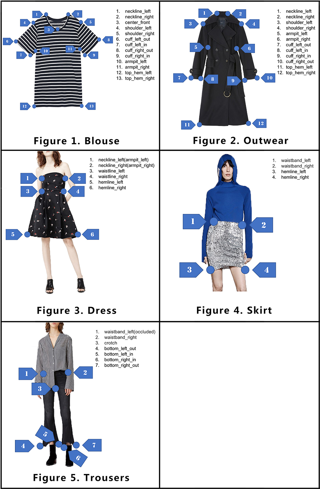

冠军方案之 FashionAI 服饰关键点定位
freeopen 2021-02-11 [机器学习] #top1冠军：李weite 及 bilibili 团队
任务说明
服装的机器分析很容易受到衣服的尺寸和形状，相机拍摄的距离和角度甚至服装的显示方式或模型摆放方式的影响。对图像中服装关键点的检测可以帮助提高应用程序的性能，例如衣服的对齐，衣服局部属性的识别以及服装图像的自动编辑。
基于服装设计知识，定义了一套服饰的关键点，并梳理了在女装6大专业类别（上衣、外套、裤子、半身裙、连身裙、连身裤）下的具体定义，要求参赛者设计算法进行定位预测。官方提供的数据集含前五个类别（连身裤类别被省略，因为在现实世界中并不常见），包括41个子类别和24种关键点。此数据集中总共有100,000个带批注的图像。

关键点定义
Keypoints\Category Blouse Outwear Trousers Skirt Dress neckline_left Y Y N N Y neckline_right Y Y N N Y center_front Y N N N Y shoulder_left Y Y N N Y shoulder_right Y Y N N Y armpit_left Y Y N N Y armpit_right Y Y N N Y waistline_left N Y N N Y waistline_right N Y N N Y cuff_left_in Y Y N N Y cuff_left_out Y Y N N Y cuff_right_in Y Y N N Y cuff_right_out Y Y N N Y top_hem_left Y Y N N N top_hem_right Y Y N N N waistband_left N N Y Y N waistband_right N N Y Y N hemline_left N N N Y Y hemline_right N N N Y Y crotch N N Y N N bottom_left_in N N Y N N bottom_left_out N N Y N N bottom_right_in N N Y N N bottom_right_out N N Y N N TOTAL 13 14 7 4 15
注解格式
注释文件保存在csv格式表中，共有26列：第一列（image_id）包含图像文件名，第二列（image_category）表示图像所属的类别，其余24列记录了 上述24个关键点的位置。 仅显示两个图像项的示例表如下所示：
image_id,image_category,neckline_left,neckline_right,center_front,shoulder_left,shoulder_right,armpit_left,armpit_right,waistline_left,waistline_right,cuff_left_in,cuff_left_out,cuff_right_in,cuff_right_out,top_hem_left,top_hem_right,waistband_left,waistband_right,hemline_left,hemline_right,crotch,bottom_left_in,bottom_left_out,bottom_right_in,bottom_right_out
Images/blouse/d21eab37ddc74ea5a5f1b4a5d3d9055a.jpg,blouse,241_135_1,301_135_1,259_136_1,216_142_1,319_144_1,212_186_1,307_202_1,-1_-1_-1,-1_-1_-1,203_236_1,195_256_1,278_241_1,283_261_1,206_243_0,292_252_0,-1_-1_-1,-1_-1_-1,-1_-1_-1,-1_-1_-1,-1_-1_-1,-1_-1_-1,-1_-1_-1,-1_-1_-1,-1_-1_-1
Images/blouse/02b54c183d2dbd2c056db14303064886.jpg,blouse,244_76_1,282_76_1,257_99_1,228_81_0,303_85_1,222_134_1,295_131_1,-1_-1_-1,-1_-1_-1,199_153_1,178_100_0,293_173_1,332_150_1,229_161_1,297_162_0,-1_-1_-1,-1_-1_-1,-1_-1_-1,-1_-1_-1,-1_-1_-1,-1_-1_-1,-1_-1_-1,-1_-1_-1,-1_-1_-1
每个关键点由一个三元组表示，每个元素由下划线连接，表示为“ x_y_v”，其中x和y为坐标，v为可见性。 如果关键点可见，则可见性等于1；如果关键点被遮挡，则可见性等于0；如果类别中不存在或未定义，则可见性等于-1。
评价标准

Normalized Error（NE）用于评估提交的结果。 NE是预测关键点位置和注释位置之间的平均归一化距离。 注意，NE计算仅涉及可见的关键点。
其中 $k$ 为关键点 ID，$d_k$为预测关键点位置与带注释的关键点位置之间的距离，$s_k$为距离归一化参数（对于上衣，外套和衣服，它等于两个腋窝点之间的欧几里得距离;对于裤子和 裙边等于两个腰带点之间的距离），$v_k$即关键点的可见性。
解题思路
第一阶段：使用检测器把女装在图片上的位置检测出来；
第二阶段：再针对女装位置，做准确关键点的定位。
通过第一阶段的处理可以给第二阶段输入更干净的数据。
第一阶段的模型采用 Faster-RCNN，backbone resnet101
第二阶段的模型为自定义，命名为 asymmetric and dilated stacked hourglass networks 。参考google CVPR 2017年论文拟合两种信息，第一种信息判断每一个像素点是否在关键点的领域范围内，如果是在领悟范围内，则标注为临近点；拟合的第二种信息是临近点和关键点之间的向量偏差，有了这个向量偏差，就可以把预测出的向量点投票到对应偏差的坐标点上，这时就能取得一个准确的关键点定位。
模型设计
asymmetric and dilated stacked hourglass networks (SHN)，非对称并带孔的SHN模型。主要特征为：
- 有一个非对称的 encoder-decoder 结构；
- 设计了一个重量级的encoder（保有更多的空间信息）和一个轻量级的decoder；
- 对 encoder-decoder 结构进行叠加，通过多个stage对keypoints进行定位。
采用非对称结构的理由，设计者认为重量级的encoder可以用来迁移学习，须保有更多空间信息，而decoder如果参数太多，就享受不到encoder初始化参数带来的好处。
当空间信息的重要性高于语义信息时的模型设计：
- 图片尺寸的减少比例，从传统的 64 => 32 => 16 => 8 改为 64 => 32 => 32 => 32
- 采用空洞卷积
- 因为增大了空间尺度，通过减少通道数量(channel numbers)使模型的计算量不增加，即512(128) => 1024(256) => 2048(512) 改为 256(128) => 512(128) => 512(128)
- 不增加计算量的前提下，堆叠网络，即 256(128) => 512(128) => 512(128)改为两个 256(64) => 512(64) => 512(64)
模型演变图
| Model | Param Size | FLOPs | Scores |
|---|---|---|---|
| ResNet50 backbone + 1 stage | 49M | 7.86G | 4.11 |
| + 2 stage + more encoder layers | 91M | 18.52G | -0.4x |
| + pre-trained | 91M | 18.52G | -0.1x |
| + more data | 91M | 18.52G | -0.1x |
| + ResNet101 + large input(352) + more channles | 402M | >100G | -0.1x |
| + increase the number of boxes(more-crops) | 402M | >100G | -0.0x |
| Final Submission | 402M | >100G | 3.30 |
其他技巧
观察到难样本分布不均，采取在线难样本挖掘，使得训练聚集到难样本。难样本搜寻不是按照传统的在一张图中查找，而是在一个batch中搜寻。
最终提交模型时给了两个模型版本，一个高速版本一个低速版本，两个版本的分数差异不大，以证明模型的实用性很强。